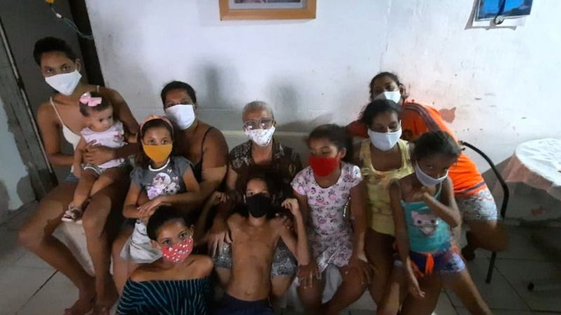

Fome e pandemia nas favelas: ‘Meus netos comem menos para eu almoçar’
Destampou os potes de mantimentos e não encontrou nada. Não havia nada nas panelas também.
Golpe de 1964
"Eventos ocorridos há 57 anos, assim como todo acontecimento histórico, só podem ser compreendidos a partir do contexto da época.".
'Fake' Amazon workers defend company on Twitter
It comes after Amazon's official accounts hit back at criticism of the company.